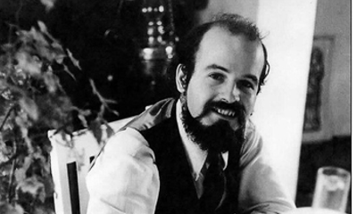

Jeunesse
Terry Pratchett est né le 28 avril 1948 à Beaconsfield dans le Buckinghamshire, en Angleterre. Il est le fils unique de David et Eileen Pratchett, originaires de Hay-on-Wye. La famille déménage à Bridgwater dans le Somerset
en 1957, où Terry intègre la John Hampden Grammar School. Il se décrit comme un « étudiant indescriptible » et affirme devoir son éducation à la bibliothèque publique de Beaconsfield.
Il s'intéresse à l'astronomie : il collectionne les cartes concernant l'espace offertes dans les paquets de thé Brooke Bond, possède un télescope et rêve de devenir astronaute, mais il n'est pas assez doué en mathématiques. Son intérêt se porte ensuite sur les romans de science-fiction anglais et américains5, ce qui l'amène à assister à des conventions de science-fiction à partir de 1963-1964, jusqu'à ce qu'il commence à travailler. Ses premières lectures incluent les œuvres de H. G. Wells et d'Arthur Conan Doyle, ainsi que « tous les livres qu'on se doit de lire », ce qu'il considère comme « la construction d'une éducation ». À 13 ans, Terry Pratchett publie sa première nouvelle, The Hades Business, dans le magazine de l'école. Elle est publiée commercialement alors qu'il a 15 ans. Il suit des cours d'arts, d'anglais et d'histoire. Il choisit d'embrasser la carrière de journaliste avant la fin de ses études et est embauché à 17 ans, en 1965, au journal local Bucks Free Press8. Il y écrit, entre autres, plusieurs histoires pour la section Children's Circle sous le pseudonyme d'Uncle Jim. Un des épisodes fait apparaître les personnages de son futur roman Le Peuple du Tapis. Pendant ses jours de repos, il parvient à décrocher des diplômes avancés en anglais (A-level) tout en prenant des cours de journalisme.
Il s'intéresse à l'astronomie : il collectionne les cartes concernant l'espace offertes dans les paquets de thé Brooke Bond, possède un télescope et rêve de devenir astronaute, mais il n'est pas assez doué en mathématiques. Son intérêt se porte ensuite sur les romans de science-fiction anglais et américains5, ce qui l'amène à assister à des conventions de science-fiction à partir de 1963-1964, jusqu'à ce qu'il commence à travailler. Ses premières lectures incluent les œuvres de H. G. Wells et d'Arthur Conan Doyle, ainsi que « tous les livres qu'on se doit de lire », ce qu'il considère comme « la construction d'une éducation ». À 13 ans, Terry Pratchett publie sa première nouvelle, The Hades Business, dans le magazine de l'école. Elle est publiée commercialement alors qu'il a 15 ans. Il suit des cours d'arts, d'anglais et d'histoire. Il choisit d'embrasser la carrière de journaliste avant la fin de ses études et est embauché à 17 ans, en 1965, au journal local Bucks Free Press8. Il y écrit, entre autres, plusieurs histoires pour la section Children's Circle sous le pseudonyme d'Uncle Jim. Un des épisodes fait apparaître les personnages de son futur roman Le Peuple du Tapis. Pendant ses jours de repos, il parvient à décrocher des diplômes avancés en anglais (A-level) tout en prenant des cours de journalisme.
